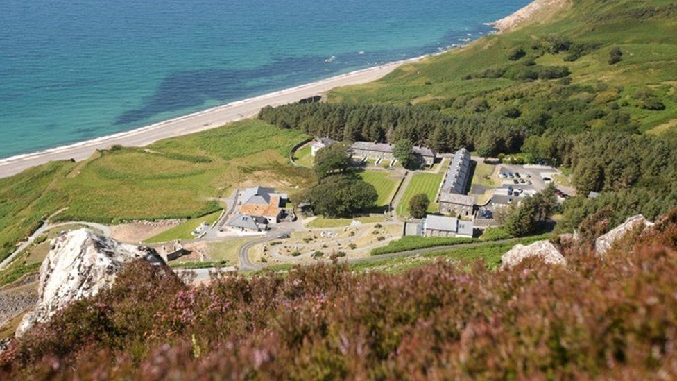
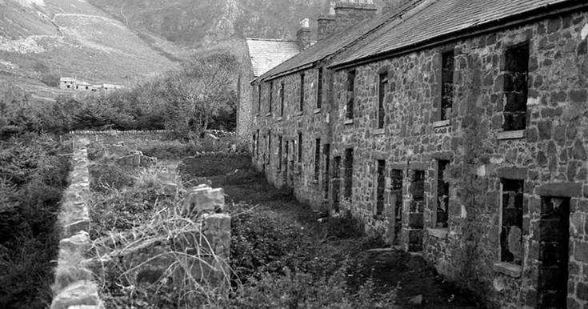
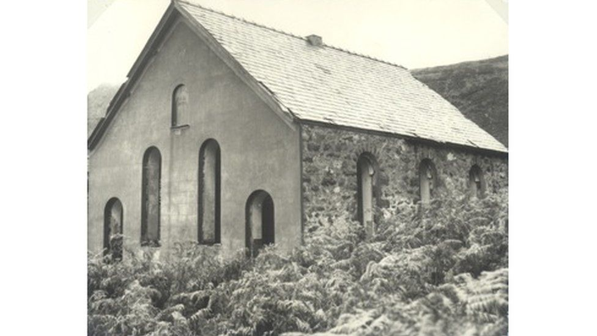

Nant Gwrtheyrn

Nant from the above
À la fin de la dernière période glaciaire, qui a duré environ 90 000 ans, cette vallée était remplie de glace. La formation de la vallée résulte d'un processus d'érosion glaciaire qui a déblayé la terre, laissant le granite dur et le manganèse. Le granite est le gagne-pain des habitants de la région depuis près de deux cents ans. Si vous descendez la route vers Nant Gwrtheyrn, vous verrez le Y Graig Ddu ("La Roche Noire") face à la mer. Cette roche est riche en manganèse, les capitaines des navires d'antan devaient être prudents lorsqu'ils passaient la vallée, car le manganèse dans la roche perturbait les boussoles des navires. À l'ombre de la Roche Noire est niché l'ancien village de carrière de Nant Gwrtheyrn.
Gwrtheyrn était un roi brittonique du cinquième siècle. Qu'il s'agisse d'un personnage historique ou non est incertain. Selon la tradition, c'est lui qui a proposé aux Saxons de s'installer aux îles britanniques. Selon Nennius, le roi saxon Hengist invita Gwrtheyrn et ses nobles à un festin à sa cour. Gwrtheyrn, tombé amoureux la fille de Hengist, Ronwen, accepta. Sur l'ordre de Hengist, pendant la fête, les Anglais, qui étaient assis alternativement avec les Bretons aux tables, tirèrent leurs longs couteaux et tuèrent trois cents Bretons. Le roi Gwrtheyrn n'avait d'autre choix que de céder ses droits sur le sud de la Grande-Bretagne aux Saxons et de fuir dans un coin isolé du Pays de Galles.
The houses before their renovation
Selon Thomas Pennant, écrivant au dix-huitième siècle, il y avait trois fermes dans la vallée, et les ruines des trois sont encore visibles aujourd’hui : Tŷ Hen, Tŷ Canol et Tŷ Uchaf.
Le fermier de Tŷ Uchaf, Rhys Maredudd voulait épouser Meinir. Le jour du mariage, Meinir se cacha, comme c'était la coutume à ce temps-là. Rhys et ses amis ne l'ont pas trouvée. Quelque temps plus tard Rhys, devenu fou après avoir perdu Meinir, s'assit sur la pente près d'un vieil arbre en plein orage. Un coup de foudre a scindé l'arbre en deux. Au creux du tronc était le squelette de Meinir dans sa robe de mariée. Elle s'était cachée dans l'arbre et n'en pouvait pas sortir. Certains disent que Rhys est mort du chagrin peu de temps après. D'autres disent qu'un second coup de foudre l'a frappé et tué sur le coup.
Il y a cent ans, les habitants du Nant ont choisi leur propre roi et c'est à lui que tout le monde demandait des conseils.
The old chapel
De temps en temps, on voit les chèvres sauvages sur les pentes et le crave à bec rouge volant au-dessus de nos têtes. Le crave à bec rouge a été choisi comme logo de l'espace de remarquable beauté naturelle et les chèvres sauvages parcourent la région depuis la dernière période glaciaire et font partie intégrante de notre histoire depuis le début.